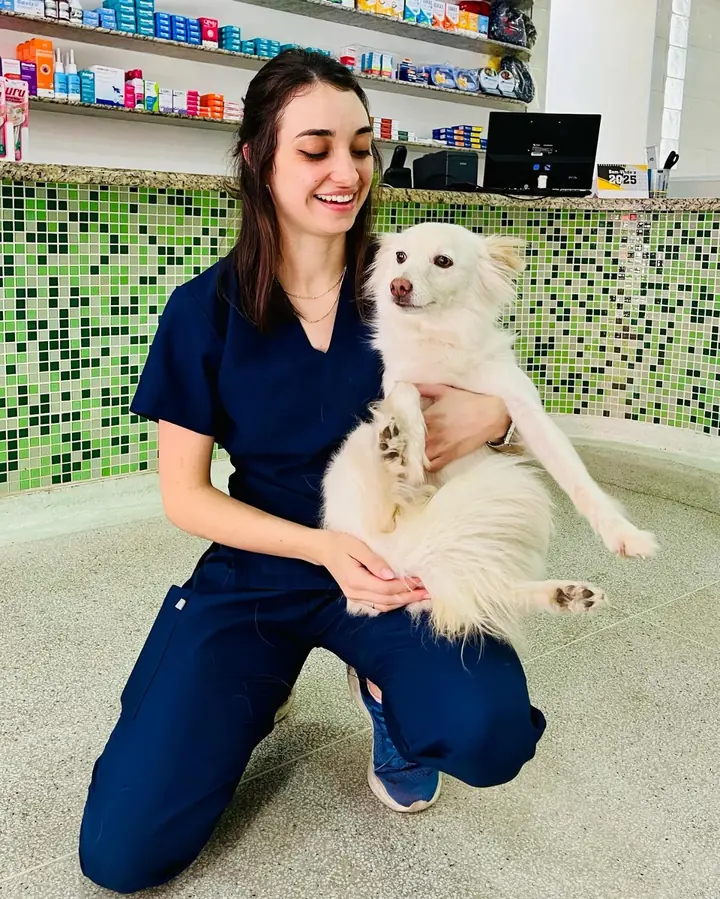
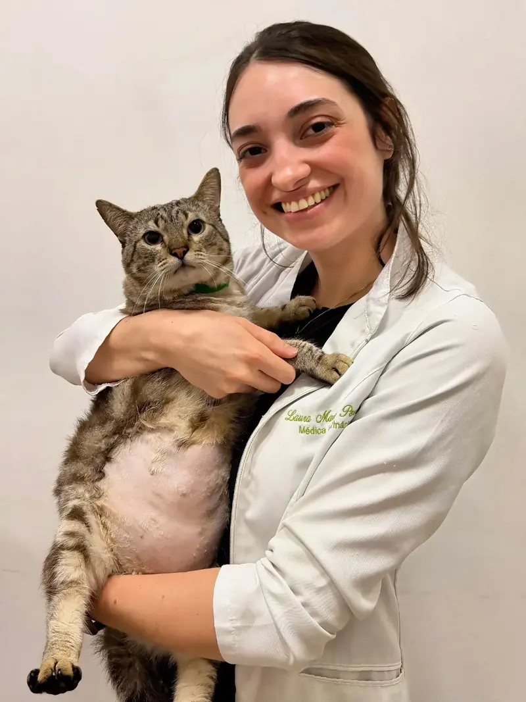
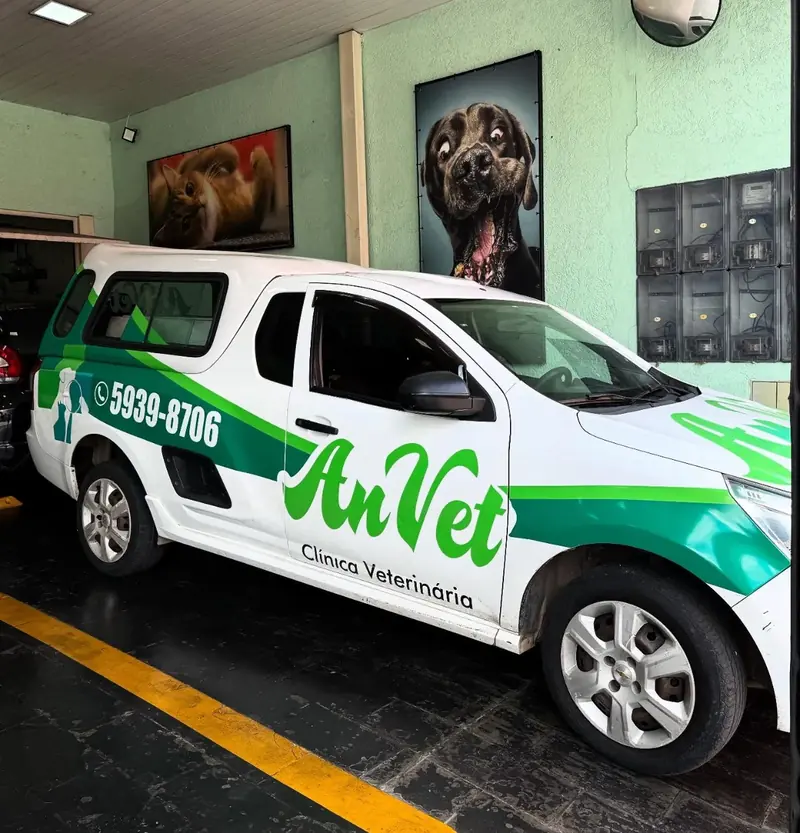
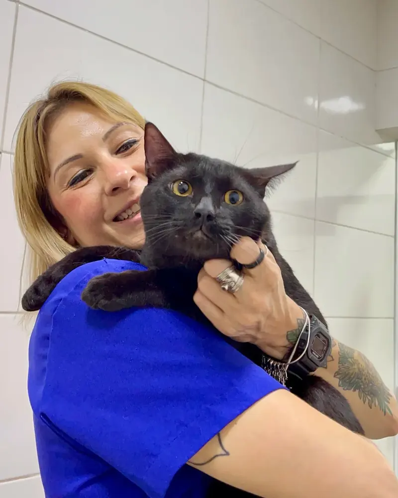
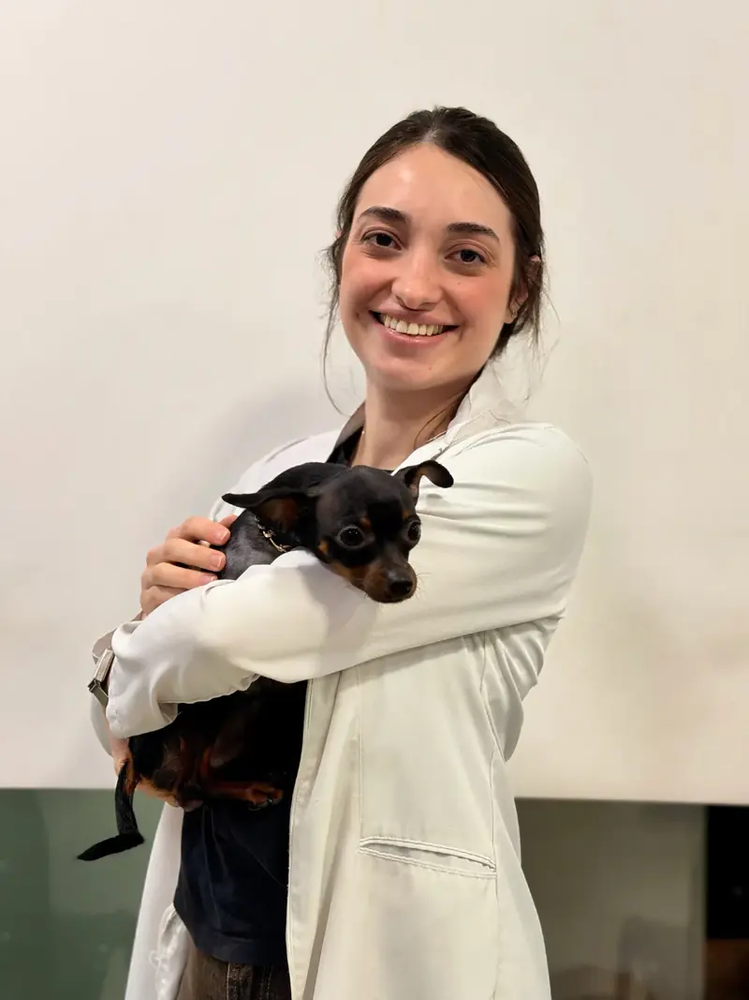
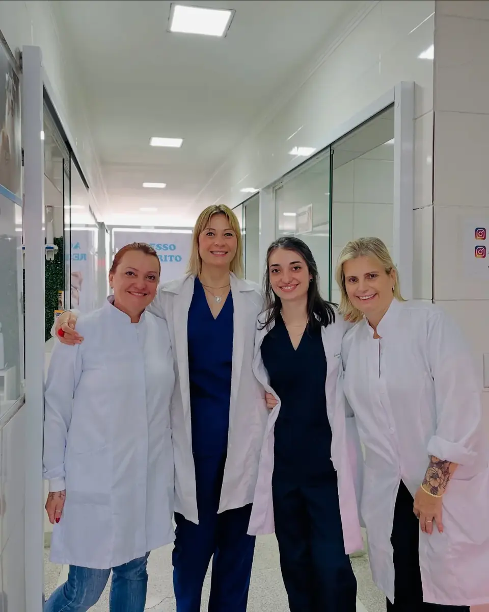
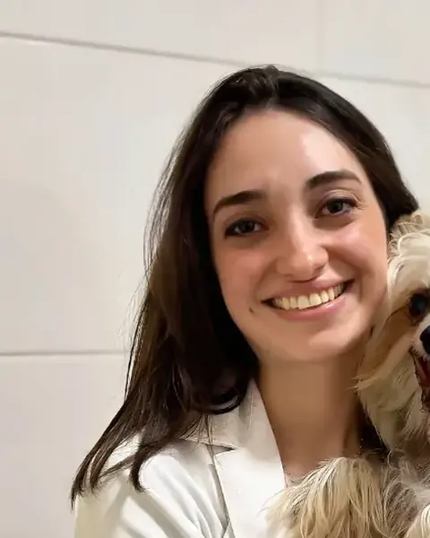
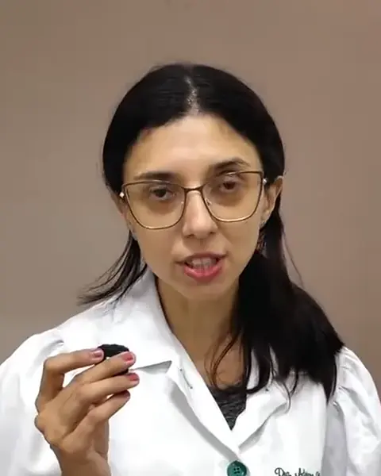

Veterinária no Grajaú
A Clínica Veterinária Anvet atende cães e gatos há mais de 25 anos, sem agendamento e com preço popular.
Segunda a sábado, das 9h às 18hEm feriados, o horário pode mudar. Os avisos saem no Instagram.
Av. Dona Belmira Marin, 1801, Parque BrasilVer como chegar

Como funciona o atendimento
Uma única unidade, de segunda a sábado, das 9h às 18h. Para a consulta, é só chegar. Alguns serviços são combinados antes.
Consulta
Sem hora marcada: chegue no horário de atendimento e a recepção encaminha seu animal.
Sem agendamentoPlano Petlove
A clínica aceita o plano Petlove, com a mesma regra da consulta. Leve os dados do plano.
Sem agendamentoTáxi dog
Leva o animal e o tutor juntos até a clínica. Peça pelo WhatsApp com antecedência e aguarde a confirmação do horário.
Com agendamentoAcupuntura e fisioterapia
Começam por uma avaliação, marcada na recepção ou pelo WhatsApp.
Com agendamento
Do check‑up à cirurgia
Consulta, exames, cirurgia e reabilitação no mesmo endereço, sem levar seu animal a outro lugar.
Consultas
Sem hora marcada
Vacinas
Cães e gatos
Raio-X e ultrassom
Raio-X com laudo
Exames laboratoriais
Laboratório na clínica
Cirurgia e castração
Centro cirúrgico próprio
Fisioterapia e acupuntura
Começa com avaliação
Táxi dog
Leva o animal e o tutor
Animais silvestres
Com agendamento
Ver todos os serviços
Consultas e prevenção
- Consultas clínicas
- Vacinas
- Microchipagem
- Orientação nutricional
- Animais silvestres, com agendamento
Exames e imagem
- Exames laboratoriais
- Raio-X com laudo
- Ultrassom
- Ecocardiograma e eletrocardiograma
- Endoscopia
Cirurgia e ortopedia
- Cirurgias
- Castração
- Ortopedia
Terapias e farmácia
- Fisioterapia
- Acupuntura
- Especialidades veterinárias
- Farmácia veterinária
Por dentro da Anvet
Sala de consulta, centro cirúrgico, raio-X, fisioterapia e o táxi dog da clínica.


Ver mais fotos e vídeos


Quem atende
Médicas veterinárias e equipe de apoio que recebem os tutores, conduzem consultas, exames e terapias.


Dra. Laura Marques
Médica veterinária
Atende cães e gatos em consultas e acompanha pacientes durante exames na clínica.

Dra. Adriana
Médica veterinária · Acupuntura
Responsável pelas avaliações e sessões de acupuntura veterinária da Anvet.
Quanto custa uma consulta?
A Anvet trabalha com preço popular. Os valores de consultas, vacinas e exames são informados na recepção ou pelo WhatsApp.
A clínica atende emergências ou 24 horas?
Não. O atendimento é de segunda a sábado, das 9h às 18h. Fora desse horário, em caso de emergência, procure um hospital veterinário 24 horas.
Quais animais são atendidos?
Cães e gatos, sem agendamento. A clínica também atende animais silvestres; nesse caso, agende a consulta pelo WhatsApp antes de vir.
Aceitam outros planos além do Petlove?
A clínica divulga apenas o Petlove. Para outro plano, confirme pelo WhatsApp antes de vir.
Como peço o táxi dog?
Envie pelo WhatsApp seu endereço, o nome do animal e o horário em que precisa. O pedido só vale depois que a equipe confirmar a disponibilidade.
A clínica abre nos feriados?
Depende do feriado. Os avisos de horário são publicados no Instagram @_anvet.
Como chegar
Av. Dona Belmira Marin, 1801
Parque Brasil, região do Grajaú
São Paulo, SP · CEP 04846-010
- Segunda a sexta
- 9h às 18h
- Sábado
- 9h às 18h
- Domingo
- Fechado
Mande sua pergunta
- Preencha os campos abaixo.
- Toque em Montar mensagem: o texto aparece nesta página. Nada é enviado pelo site.
- Abra o WhatsApp, confira o texto e envie. A clínica responde por lá.
Pedidos de táxi dog e de avaliação só valem depois que a equipe confirmar o horário. Veja como os dados são tratados na Política de Privacidade.